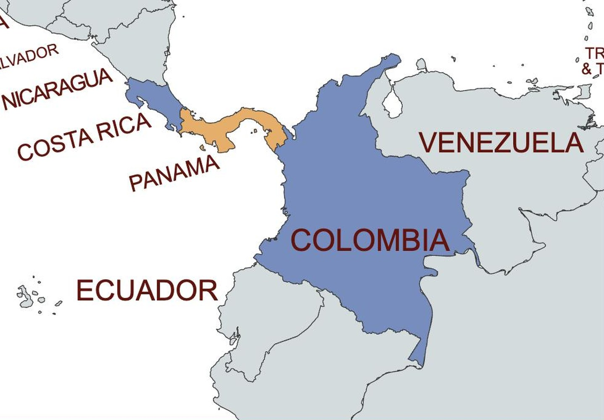
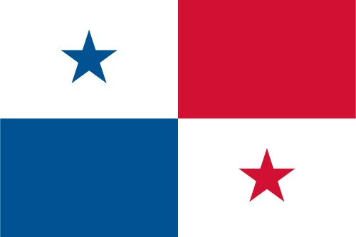
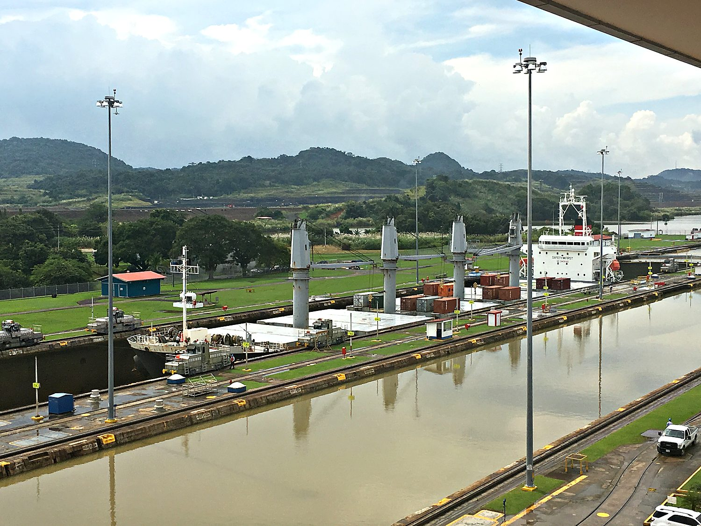
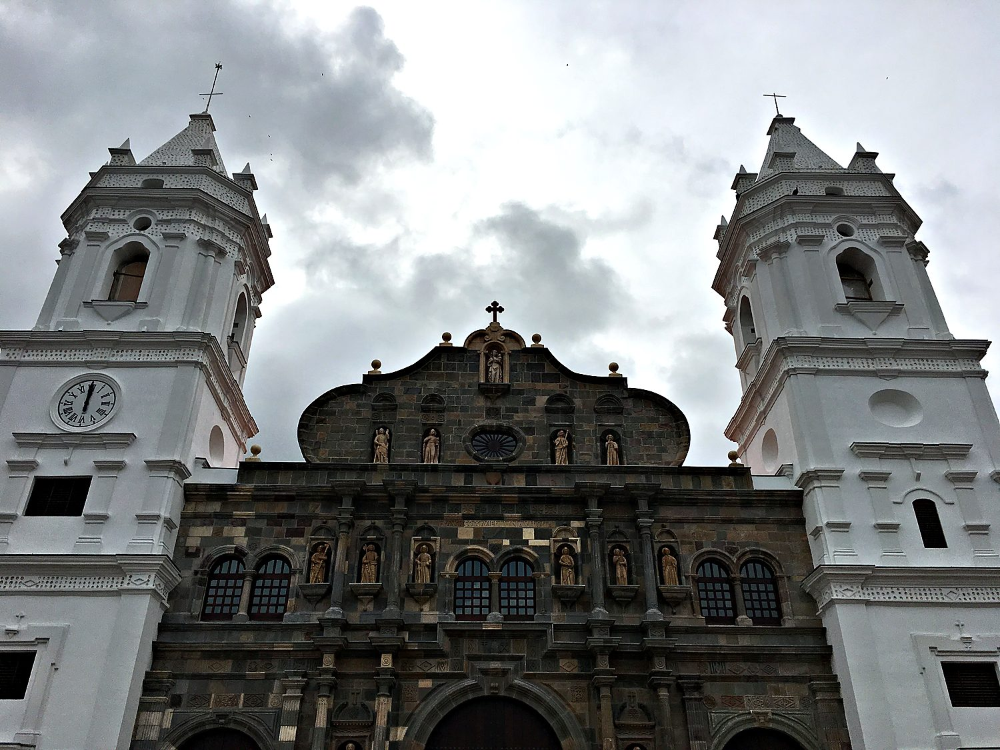
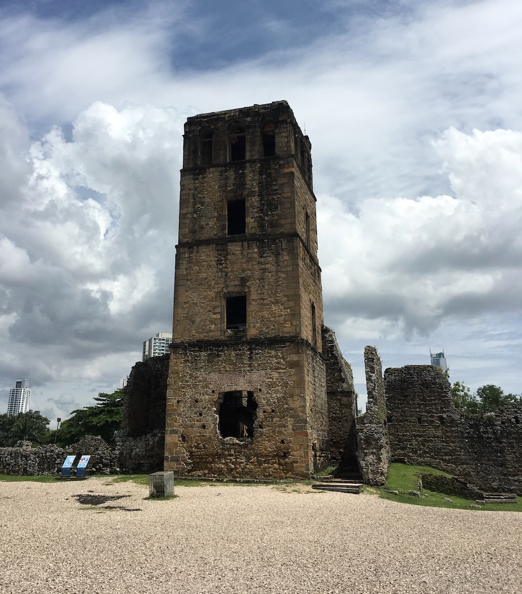

I travelled to Panama in October 2018 with a rotating cast of friends: Miles, Katherine, Daniel, and Gabriel. The trip began, as the best ones do, with a dead sprint across campus to print a boarding pass and to catch a shuttle bus in the nick of time. Once there, we enjoyed touring the Canal, the old city, the rainforest, and the causeway. We filled the gaps in our schedule with an unrelenting tournament of card games. My personal contribution to posterity was earning the group's verdict of "incomprehensible" for the way I play the word game Contact. I stand by my methods, and I lost anyway.
Panama City sits on the Pacific side of the narrow isthmus that joins North and South America. That geography is the country's entire destiny. Panama exists at the hinge of two continents and, thanks to the Canal, at the hinge of two oceans as well. The modern capital is a startling wall of glass skyscrapers that would not look out of place in Dubai, all of it fuelled by shipping, banking, and the endless traffic of global trade. Yet a short walk away lie two older cities, one rebuilt and one in ruins, that tell how Panama became a crossroads in the first place.

The story starts in 1519 with the founding of Panamá Viejo, the first European city on the Pacific coast of the Americas. For a century and a half it grew rich as the point where the plundered silver of Peru was hauled across the isthmus and loaded onto ships bound for Spain. Such wealth attracted the wrong kind of attention. In 1671 the Welsh privateer Henry Morgan sacked and burned the city to the ground. The survivors rebuilt a couple of years later on a more defensible peninsula nearby, the walled quarter now known as Casco Viejo. In the late 1690s, the Kingdom of Scotland attempted to set up a colony in the Darien Gap that separates Panama from Colombia. This patch of dense rainforest remains undeveloped to this day and is the only break in the Pan-American Highway. Unsurprisingly, this venture destroyed both Scotland’s dreams of becoming a colonial power, and its economy. This pushed Scotland to sign the Acts of Union with England in 1707, forming the united Kingdom of Great Britain which we all know today.

Panama won independence from Spain in 1821 and immediately joined Gran Colombia, remaining a province of Colombia for the rest of the century. Everything changed because of the Canal. When Colombia balked at a canal treaty, Panama declared independence in 1903 with enthusiastic backing from the United States, which wanted its shortcut between the oceans. The country's flag dates from that founding moment, quartered into blue and red panels on white with two stars. The blue and red stand for the country's rival political parties, the white for the peace between them, and the stars for the civic virtues meant to guide the new republic.
The Canal is the reason the world knows Panama's name, and standing at the Miraflores Locks to watch a ship rise is genuinely humbling. The French tried first, under the builder of the Suez Canal, and failed catastrophically in the 1880s as malaria and yellow fever killed workers by the thousands. The United States finished the job between 1904 and 1914, in the process conquering the mosquito-borne diseases that had defeated everyone before. For most of the 20th century the US controlled the surrounding Canal Zone, and only in 1999 did Panama take full ownership of the waterway that defines it. We spent a rainy morning at the museum and locks, watching enormous vessels step up and down through the gates like water taking a staircase. It was fascinating to see these gargantuan freighter ships almost sink below the ground in the canal’s locks.

Casco Viejo is the old town the survivors of Henry Morgan's raid built in 1673, and it is now a UNESCO World Heritage Site. Its narrow streets mix Spanish colonial, French, and Caribbean architecture, a physical record of everyone who has passed through this crossroads. At its heart stands the Catedral Metropolitana, its pale twin towers inlaid with mother-of-pearl. We wandered the quarter with ice cream in hand, and it made a quaint, low-rise counterpoint to the glass skyline shimmering just across the bay.

To close the loop of the story, we visited Panamá Viejo, the ruins of the original city that Morgan destroyed. What remains is a scatter of roofless stone shells set among the grass, dominated by the tower of the old cathedral, which you can still climb for a view over the ruins and the modern towers beyond. Standing in that gutted nave, with pirate history underfoot and skyscrapers on the horizon, is the whole of Panama compressed into a single frame. It is a country that has been burned down, rebuilt, and reinvented as the meeting point of the world.
